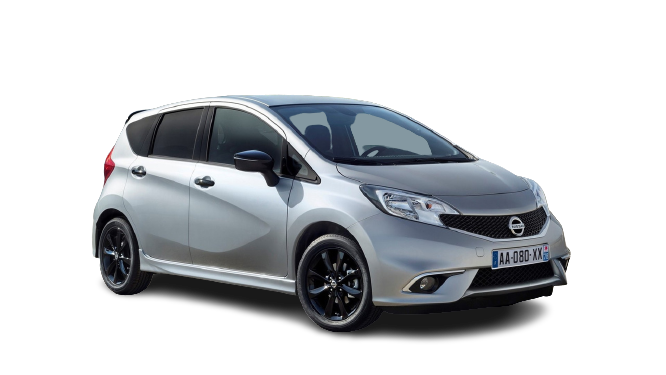

Оснащался атмосферным бензиновым мотором объёмом 2,5 л. (173 л. с.)
турбодвигателями 1.5 л. (181 л. с.),
2.0 л. (245 л. с.)
V6 2.4 л. (325 л.с.).
На смену пришли двигатели системы «EcoBoost» в трёх версиях: два дизельных агрегата
и одна гибридная установка, которые устанавливали для российских версий Ford Fusion.
Toyota Supra mk5 and mk4
Supra имеет связь с Toyota 2000GT, от которой к ней перешел двигатель. На автомобили первых трёх поколений
устанавливались двигатели M-серии от Toyota Crown и 2000GT. На все четыре поколения Supra
устанавливались рядные 6-цилиндровые двигатели. Шасси получило код «А».
Toyota разработала собственный логотип для Supra.
Этот логотип использовался до января 1986 года, когда появилось первое самостоятельное поколение. Новый логотип был похож по размеру, имел
оранжевую надпись на красном фоне, но без изображения дракона. Этот логотип,
в свою очередь, использовался до 1991 года, когда Toyota перешли на логотип компании.
В 1998 году Toyota прекратила продажи Supra в США, а в 2002 году было официально прекращено производство в Японии.
Четыре поколения получили обозначения A40, A60, A70, A80. Официальные названия модификаций автомобилей
Toyota относятся только к кодам шасси. Toyota использует название Mark II для обозначения своих автомобилей на платформе X,
которые включают модели Mark II, Cressida, Chaser и Cresta.

Nissan Note
Note пришёл на смену непопулярному Almera Tino.Перейти к разделу «История создания»
Первое поколение было представлено в 2004 году для рынка Японии и в 2005 году — для рынка Европы и стран СНГ,
где продажи начались весной 2006 года. Модель имела успех на европейском рынке, где уже спустя год было продано
более 100 000 автомобилей. К 2012 году суммарные продажи в Европе и в Японии составляли уже 940 000 автомобилей.
Перейти к разделу «Первое поколение (E11)»
В 2012 году представлено второе поколение автомобиля. Помимо рынков Японии и Европы (теперь уже без СНГ) началось
производство и продажи на рынке Северной Америки, где автомобиль получил имя Nissan Versa Note, но не сыскал особой
популярности. В 2017 году была представлена гибридная модификация E-Power. Перейти к разделу «Второе поколение (E12)»
Третье поколение, представленное в 2020 году, производится лишь для внутреннего японского рынка, однако имеет там высокую популярность.
Ford F150
F-Series — серия полноразмерных пикапов, выпускаемых Ford Motor Company более семидесяти лет.
Первый пикап Ford F-серии — одна из самых успешных моделей в истории компании Ford. С момента
своего появления в 1948 году компания продала более 27,5 млн пикапов F-серии по всему миру;
это самый продаваемый пикап в Америке в течение 30 лет, также автомобили F-серии являются
самыми продаваемыми автомобилями в США и Канаде[источник не указан 986 дней]. К настоящему
времени выпущено уже 13 поколений. С 1999 года F-250 и более тяжёлые модели выделены в
отдельную серию Ford Super Duty.
BMW M8
BMW возродила шильдик 8-й серии, представив M8 GTE,
который заменил M6 GTLM в конце сезона 2017 года.
На Женевском автосалоне 2018 компания BMW представила
концепт M8 Gran Coupé Concept, в котором был анонсирован
высокопроизводительный четырехдверный вариант Concept 8 Series,
представленный вместе с M8 GTE на Франкфуртском автосалоне 2017 .
Дизайн концепта был основан на M8 GTE и отличался агрессивными
визуальными элементами M. Прототипы M8 начали испытания в июне
2017 года, когда общественности был представлен еще один концепт 8-й серии.